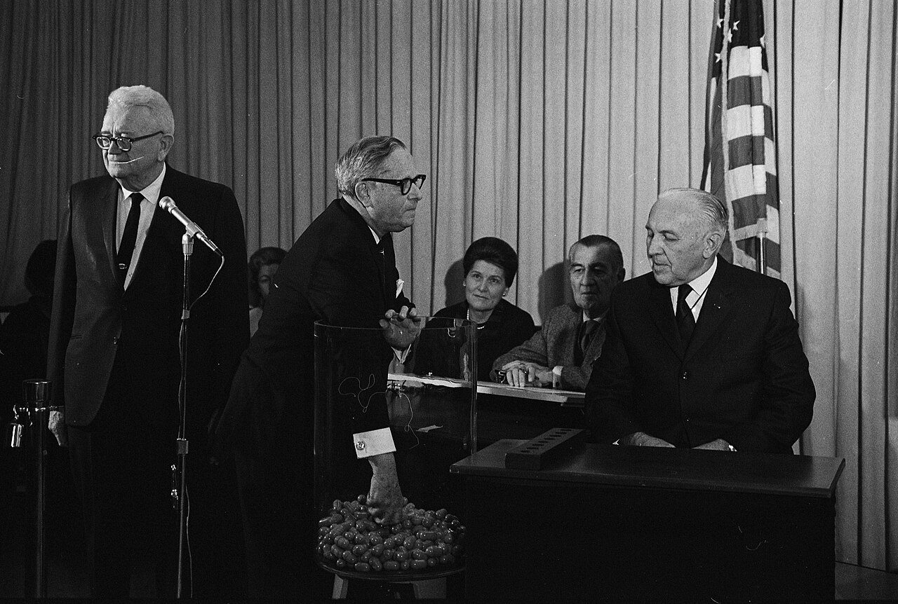
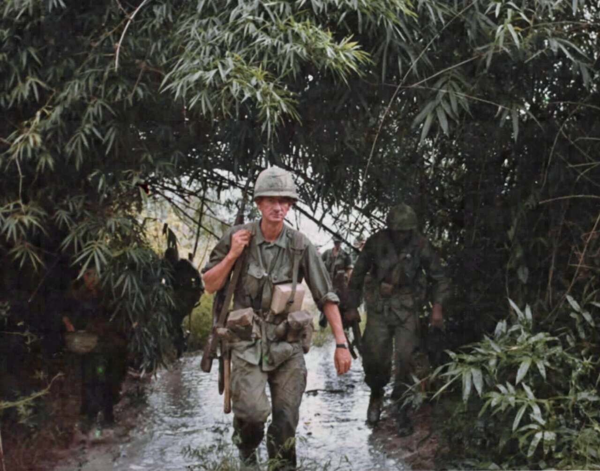
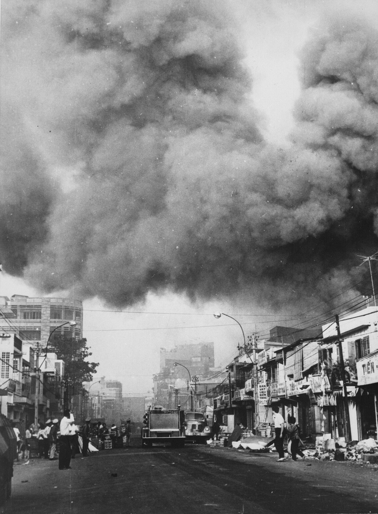
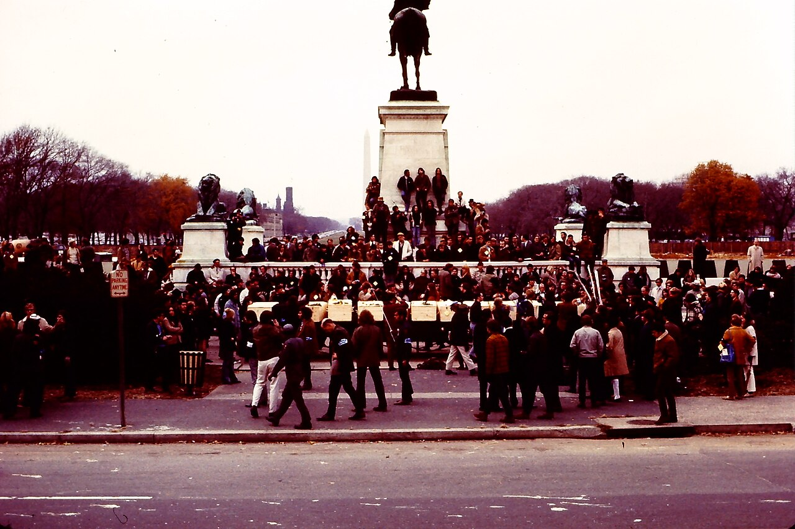
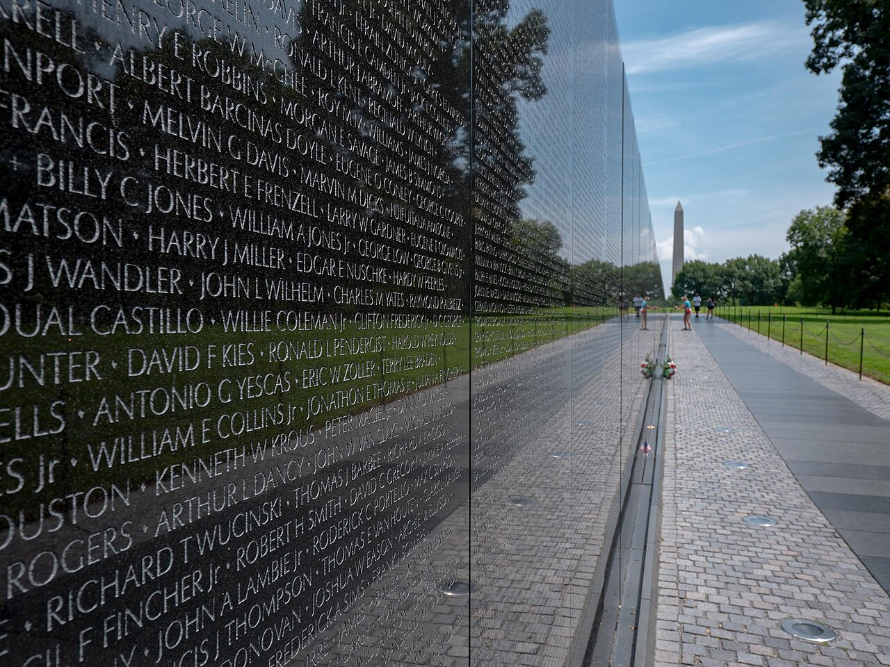

An APUSH Historical Documentary
Vietnam, the Draft, and the Fracture of the American Dream
Inspired by the protest music of 1969
"Fortunate Son" — Creedence Clearwater Revival
Press → or click to begin
United States — 1945–1965
The soldiers who came home from World War II built something extraordinary. Subdivisions rose from farmland. Factories hummed. Children grew up in the certainty that the American Dream was real — that sacrifice was rewarded, that the nation kept its promises.
It was the era of unquestionable patriotism. To serve was to be honorable. The flag meant something uncomplicated.
But America's promises, as it turned out, were not distributed equally.
1969 — John Fogerty writes a song
"Some folks are born made to wave the flag,
Ooh, they're red, white and blue."
Fortunate Son — Creedence Clearwater Revival, 1969
Written in one night. Released as America was fracturing. A protest song that became a mirror — reflecting who was asked to die, and who was not.
This is the history behind the music.
Act I
1964 — Gulf of Tonkin Resolution
A government decides who goes to war.
The answer was not random.

ORDER TO REPORT FOR INDUCTION
The President of the United States, to:
[NAME OF INDUCTEE]
You are hereby directed to present yourself for Armed Forces Physical Examination…
Selective Training and Service Act of 1940, as amended.
1964 — 1973
Between 1964 and 1973, the United States military drafted 2.2 million men for service in Vietnam. The draft was administered locally by civilian draft boards — staffed almost entirely by older, established community members.
The Selective Service Act allowed numerous categories of deferment — and not every American had equal access to them.
Draft boards overwhelmingly reflected the social hierarchies of their communities. Local board members — often merchants, lawyers, and civic leaders — routinely granted deferments to men they recognized from church, golf clubs, and business circles.
The II-S Deferment — Student Status
— Creedence Clearwater Revival, 1969
II-S
Student deferment. Attending college meant staying home. College enrollment rose sharply after 1964 among men of draft age — disproportionately white and upper-class.
I-Y / IV-F
Medical deferment. Wealthier families had access to private doctors who could document conditions — heel spurs, allergies, anxiety — that poorer men could not have certified.
II-A
Occupational deferment. Essential civilian work. Available to those with the right connections to industries deemed critical to national interest.
In all, an estimated 15 million men of draft age found legal ways to avoid service during the Vietnam era. The working class had far fewer options.
"It ain't me, it ain't me,
I ain't no senator's son…"
— CCR, 1969
25%
of eligible men from wealthy families served in Vietnam
80%
of those who went had no college education
2.7M
Americans served in Vietnam War theater
The song was not a metaphor. It was a ledger.
Act II
1965 — 1968
The sons of America were sent into a jungle
their government did not fully understand.

Vietnam — 1965–1972
The terrain was unlike anything American military doctrine had prepared for. The Viet Cong used tunnels, booby traps, and civilian cover. Body counts became the primary metric of success — a statistical fiction designed to satisfy commanders in Washington.
The average age of a combat soldier in Vietnam was 19 years old. In World War II, it was 26.
By 1967, Secretary of Defense Robert McNamara privately acknowledged the war was unwinnable. He told President Johnson this in a private memo — while the public continued to be told progress was being made. The gap between official narrative and reality was already enormous.
CBS Evening News — February 27, 1968
"It seems now more certain than ever that the bloody experience of Vietnam is to end in a stalemate."
— Walter Cronkite, CBS News Editorial, February 1968
Vietnam was the first war broadcast directly into American living rooms. For the first time in history, families watched the war at dinner. The distance between government rhetoric and television reality became impossible to ignore.
When Cronkite spoke, President Johnson reportedly said: "If I've lost Cronkite, I've lost Middle America."
The Credibility Gap — 1967
What They Said
"We are winning. The enemy is weakening. We can see the light at the end of the tunnel."
— Gen. William Westmoreland, 1967
What Was Happening
U.S. casualties rose every year. By 1968, over 16,000 Americans had died. The Viet Cong showed no signs of collapse. Public approval of the war fell below 50% for the first time.
The term "credibility gap" entered American political vocabulary in 1965, coined by journalists to describe the widening space between the Johnson administration's optimistic Vietnam statements and observable reality. This loss of institutional trust had lasting consequences — it accelerated both the anti-war movement and a broader national skepticism toward government that persists to this day.
Act III
1968 — 1971
A nation watching itself fall apart.
The streets became a second front.

January 30–31, 1968
On the Vietnamese lunar new year, North Vietnamese and Viet Cong forces launched simultaneous attacks on over 100 cities and outposts across South Vietnam — including the U.S. Embassy in Saigon. The American public watched in shock.
The military called it a tactical defeat for the enemy. But the American public drew a different conclusion: if the enemy could strike anywhere, at any time, then the government's claims of progress had been lies.
Tet destroyed whatever remained of public confidence in Johnson's Vietnam policy. By March 1968, LBJ's approval rating on Vietnam had fallen to 26%. On March 31, he announced he would not seek re-election. The war had consumed his presidency.

Oct. 15, 1969
Vietnam Moratorium Day — estimated 2 million Americans participated in anti-war demonstrations across the country. The largest coordinated protest in U.S. history to that date.
Nov. 15, 1969
The Moratorium March on Washington — 500,000 people gathered on the National Mall. Vietnam Veterans Against the War threw their medals onto the Capitol steps.
The movement crossed every demographic. It was not just students. It was veterans, mothers, clergy, and workers — the same working-class America that had borne the draft.
Kent State University, Ohio
Ohio National Guard troops opened fire on student protesters at Kent State University, killing four students and wounding nine others. Two of the four killed — Allison Krause and Jeffrey Miller — had been participating in anti-war demonstrations. The other two — Sandra Scheuer and William Knox Schroeder — had been walking between classes.
Neil Young wrote "Ohio" four days later. It was on the radio within weeks. The song asked the question America could not answer: how far would the government go?
HISTORY OF U.S. DECISION-MAKING
IN VIETNAM, 1945–68
This document contains information
affecting the national defense of the
United States within the meaning of the
Espionage Laws, Title 18, U.S.C.
June 13, 1971 — The New York Times
Defense analyst Daniel Ellsberg leaked 7,000 pages of classified Defense Department history to The New York Times. The papers revealed that four successive administrations — Truman, Eisenhower, Kennedy, and Johnson — had systematically misled Congress and the American public about Vietnam.
The Nixon administration sought to suppress publication. The Supreme Court ruled 6–3 in New York Times Co. v. United States (1971) that the government had not met the heavy burden required for prior restraint of the press.
The Pentagon Papers confirmed what many Americans already suspected: the government had been lying for years. They accelerated the collapse of trust in federal institutions that became a defining feature of the 1970s — and arguably never fully recovered.
Act IV
1968 — 1975
58,220 Americans died.
Those who came home found a country
that no longer knew what to do with them.

The United States, 1968 — 1975
Vietnam veterans returned to a nation divided. Unlike the heroes of World War II who came home to parades, Vietnam veterans often returned quietly — sometimes in civilian clothes to avoid confrontation. The war they fought had no clear victory, and their country did not know how to receive them.
Post-traumatic stress — then called "Vietnam Syndrome" — went largely untreated. Veterans were turned away from VA hospitals. Unemployment among veterans ran double the national average. Agent Orange exposure caused cancers that would claim more lives after the war than during it.
The treatment of Vietnam veterans exposed a fundamental incoherence in how American society processed the war: the public had turned against the conflict, but the institutions responsible for caring for those who fought it were unprepared and underfunded. It took until the 1980s before PTSD was formally recognized by the American Psychiatric Association.
Historical Argument
The draft was not broken. It was working exactly as the powerful intended. The sons of senators did not serve. The sons of farmers and factory workers did. This was not an accident — it was a system.
The anti-war movement was not disloyalty. It was a demand for accountability — the same democratic accountability the government claimed to be defending in Southeast Asia. The irony was not lost on those who marched.
John Fogerty wrote "Fortunate Son" in 1969 because he saw this clearly. The song survived because the contradiction it described has never fully been resolved.
"Some folks are born made to wave the flag…
It ain't me, it ain't me."
Fortunate Son — CCR, 1969 | © John Fogerty / Fantasy Records
Presented by
APUSH 2026
Mr. Siflinger
Song Reference: "Fortunate Son" © 1969 John Fogerty
Published by Fantasy Records — Educational / analytical purposes only
Historical sources: National Archives (NARA), Library of Congress,
Miller Center UVA, Baskir & Strauss (1978), Appy (1993)
Archival photographs: U.S. National Archives (NARA) — Public Domain
Scene 04: Selective Service System / U.S. Government — Public Domain
Scene 13: Dr. Dennis Bogdan (CC BY-SA 4.0) — Moratorium March, Nov. 15, 1969
Scene 17: David J. Jackson (CC BY-SA 4.0) — Vietnam Veterans Memorial
APUSH 2026 Multimedia Final Project